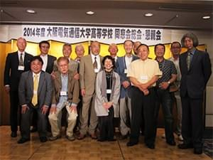
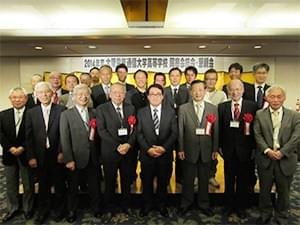

大阪電気通信大学高等学校同窓会は、平成26年度総会・懇親会を、平成26年5月17日(土)守口市のホテルアゴーラにおいて開催いたしました。
森会長は体調不良による入院治療のため欠席。本会は、これまで森会長のリーダーシップにより活動してきました。森会長不在の総会・懇親会開催に不安がのこ るなか、午後4時30分定刻から、議長の選出に始まり、平成25年度事業報告、平成25年度決算報告についで、役員改選をはさみ平成26年度事業計画、平 成26年度予算について、全て提案通り承認されて、無事総会を終えました。
会長・副会長・監査を選出しました。
今回の総会は、規定に基づいて、会長1名・副会長2名と会計監査2名の改選期でありました。下記のとおり、役員を選出いたしまし。
- 会 長
- 大音 博司(新任)
- 副会長
- 幸田 秀雄(新任)、新宅 寛(再任)
- 監 査
- 横山 元一(再任)、吉川 博史(再任)
懇親会は盛会に開催されました。
総会終了後の17時から、懇親会が開催されました。
水谷幹事の開会宣言、藤田高校長挨拶、続いて、橘大学長から来賓を代表してご挨拶をいただき、河邉顧問の乾杯発生に続いて懇親会が スタートいたしました。来賓・会員合わせて全体の参加者数は40名と少ない状況でしたが、卒業以来数十年ぶりに同級生と再会された方、初めて同窓会に出席 された方、恩師との再会に盛り上がる方、等など少ない人数なりに中身の濃い懇親会となりました。2時間と限られた時間内での懇親会でしたが、同窓会の運営 に協力していただける会員の発掘もあり、お世話をさせていただいた執行部としても、大きな収穫があった懇親会でした。午後8時に、来年度の再会を誓って散開いたしました。
来賓の皆さま、ご出席ありがとうございました。
母校、藤田校長先生、大学橘学長先生を始め、法人本部、大学事務局からご出席いただきました各先生方にお礼を申し上げます。
恩師の先生方他各位の参加者に感謝を申し上げます。
ご出席ありがとうございました。

